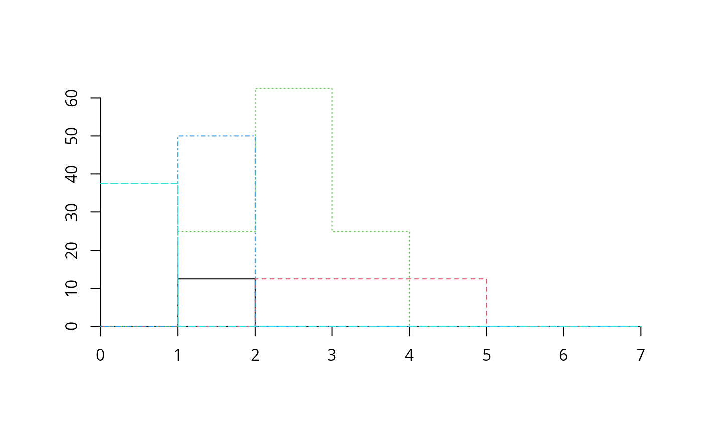

Draws cummulative abundance profiles
plot.CAP.RdCreate plots used to inspect one or more cumulative abundance profiles.
Usage
# S3 method for class 'CAP'
plot(x, sizes=NULL, species=NULL, plots=NULL, switchAxes=FALSE,
add=FALSE, drawAxes = TRUE, xlab="", ylab="", type="s",...)
# S3 method for class 'stratifiedvegdata'
plot(x, sizes=NULL, species=NULL, plots=NULL, switchAxes=FALSE,
add=FALSE, drawAxes = TRUE, xlab="", ylab="", type="s",...)Arguments
- x
An object returned from function
CAPor an object of classstratifiedvegdata(see documentation for functionstratifyvegdata).- sizes
A vector containing the size values associated to each size class. If
NULLthe y-axis will be defined using the size class order inx.- species
A vector of strings indicating the species whose profile is to be drawn. If
NULLall species are plotted.- plots
A vector indicating the plot records whose profile is to be drawn. Can be a
charactervector (for plot names), anumericvector (for plot indices) or alogicalvector (for TRUE/FALSE selection). IfNULLall plot records are plotted.- switchAxes
A flag indicating whether ordinate and abscissa axes should be interchanged.
- add
A flag indicating whether profiles should be drawn on top of current drawing area. If
add=FALSEa new plot is created.- drawAxes
A flag indicating whether axes should be drawn.
- xlab
String label for the x axis.
- ylab
String label for the y axis.
- type
Type of plot to be drawn ("p" for points, "l" for lines, "s" for steps, ...).
- ...
Additional plotting parameters.
References
De Cáceres, M., Legendre, P. & He, F. (2013) Dissimilarity measurements and the size structure of ecological communities. Methods in Ecology and Evolution 4: 1167-1177.
Examples
## Load stratified data
data(medreg)
## Check that 'medreg' has correct class
class(medreg)
#> [1] "stratifiedvegdata" "list"
## Create cumulative abundance profile (CAP) for each plot
medreg.CAP = CAP(medreg)
## Draw the stratified data and profile corresponding to the third plot
plot(medreg, plots="3")

plot(medreg.CAP, plots="3")
## Look at the plot and CAP of the same plot
medreg[["3"]]
#> 1 2 3 4 5 6 7
#> Pine trees 0.0 12.5 0.0 0.0 0.0 0 0
#> Quercus trees 0.0 0.0 12.5 12.5 12.5 0 0
#> Tall shrubs and small trees 0.0 25.0 62.5 25.0 0.0 0 0
#> Scrubs and small shrubs 0.0 50.0 0.0 0.0 0.0 0 0
#> Grass 37.5 0.0 0.0 0.0 0.0 0 0
medreg.CAP[["3"]]
#> 1 2 3 4 5 6 7
#> Pine trees 12.5 12.5 0.0 0 0.0 0 0
#> Quercus trees 37.5 37.5 37.5 25 12.5 0 0
#> Tall shrubs and small trees 112.5 112.5 87.5 25 0.0 0 0
#> Scrubs and small shrubs 50.0 50.0 0.0 0 0.0 0 0
#> Grass 37.5 0.0 0.0 0 0.0 0 0